식음료 · PP 포대 · OCR · OCV
식음료 포대 생산일자 AI OCR 시스템 사례
AI 위치 검출 · AI OCR
구김·문자 왜곡·잉크 번짐 때문에 기준 패턴을 잡기 어려운 포대에서 문자 영역을 먼저 찾고 AI OCR을 수행한 사례입니다. 검출 위치를 기준으로 OCR ROI를 설정했습니다.
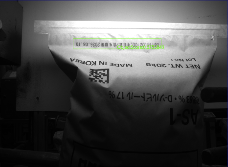
Project Summary
프로젝트 핵심 구성
- 산업
- 식음료 · PP 포대
- 검사·자동화 대상
- 식음료 포대 생산일자 AI OCR
- 주요 기술
- AI 위치 검출 · AI OCR
- 적용 구분
- 프로젝트 사례
01 · Overview
프로젝트 개요
구김·문자 왜곡·잉크 번짐 때문에 기준 패턴을 잡기 어려운 포대에서 문자 영역을 먼저 찾고 AI OCR을 수행한 사례입니다. 검출 위치를 기준으로 OCR ROI를 설정했습니다.
02 · Problem
프로젝트에서 해결해야 했던 문제
고객사는 생산이 완료된 포대에 생산일자를 잉크로 마킹하고 있었습니다.
하지만 실제 생산 현장에서는 다음과 같은 문제가 발생했습니다.
포대가 심하게 구겨짐
글자가 휘어지고 왜곡됨
잉크 번짐 발생
제품마다 위치가 조금씩 달라짐
기준이 되는 일정한 패턴(Fixture)이 없음
이러한 조건 때문에 작업자가 직접 생산일자를 확인하고 있었으며,
자동화를 시도했지만 안정적인 OCR 성능을 확보하지 못하고 있었습니다.
- 포대 구김과 문자 왜곡
- 잉크 번짐
- 기준 패턴 부재
03 · System
검사·자동화 시스템 구성
구김·문자 왜곡·잉크 번짐 때문에 기준 패턴을 잡기 어려운 포대에서 문자 영역을 먼저 찾고 AI OCR을 수행한 사례입니다. 검출 위치를 기준으로 OCR ROI를 설정했습니다.
OCR ROI 설정
AI OCR 판독
생산일자 확인
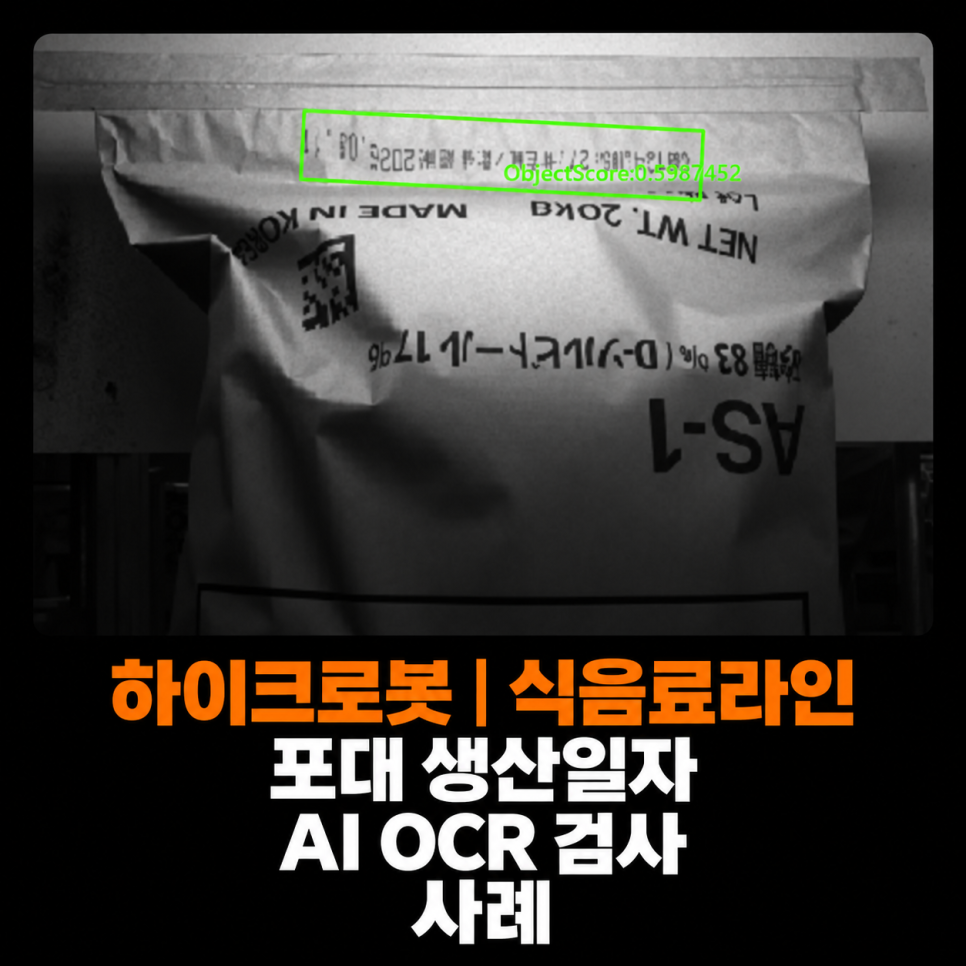
04 · Inspection
고객의 고민
고객사는 생산이 완료된 포대에 생산일자를 잉크로 마킹하고 있었습니다.
하지만 실제 생산 현장에서는 다음과 같은 문제가 발생했습니다.
포대가 심하게 구겨짐
글자가 휘어지고 왜곡됨
잉크 번짐 발생
제품마다 위치가 조금씩 달라짐
기준이 되는 일정한 패턴(Fixture)이 없음
이러한 조건 때문에 작업자가 직접 생산일자를 확인하고 있었으며,
자동화를 시도했지만 안정적인 OCR 성능을 확보하지 못하고 있었습니다.
05 · Inspection
다른 업체도 해결하지 못했던 프로젝트
이번 프로젝트는 이미 다른 업체에서 자동화를 시도했지만 실패한 사례였습니다.
기존 방식은 일정한 기준 패턴을 찾은 후 OCR을 수행하는 구조였지만,
포대는 재질 특성상 계속 구겨지고 변형되기 때문에
기준이 되는 패턴을 안정적으로 찾을 수 없었습니다.
결국 문자 위치가 계속 달라지고 OCR 정확도가 떨어져 실제 생산라인에서는 사용할 수 없는 수준이었습니다.
06 · Inspection
ASPEC이 제안한 솔루션
현장을 확인한 후 가장 먼저 판단한 것은
"패턴을 찾는 것이 아니라 글자를 먼저 찾아야 한다."
였습니다.
포대는 일정한 형태를 유지하지 못하기 때문에
Fixture를 기준으로 검사하는 방식보다
AI가 문자 자체를 찾아주는 방식이 훨씬 적합하다고 판단하였습니다.
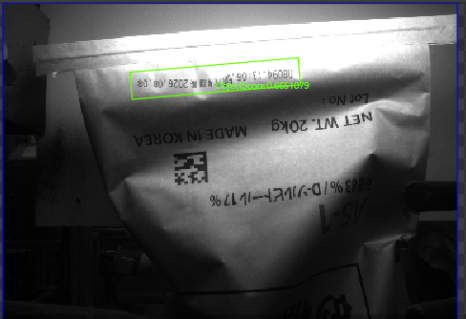
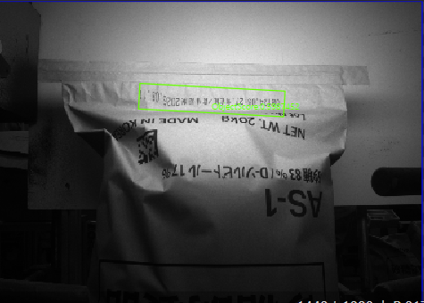
07 · Inspection
1단계 - AI가 문자 위치를 먼저 찾습니다
이번 프로젝트에서는 먼저 AI 기반 문자 위치 검출 기능을 적용하였습니다.
AI가 생산일자가 인쇄된 영역을 자동으로 찾아주기 때문에
제품이 조금 구겨지거나 위치가 달라져도
OCR을 수행할 위치를 안정적으로 검출할 수 있었습니다.
기존 룰베이스 방식에서는 어려웠던 위치 편차 문제를 AI가 해결한 것입니다.
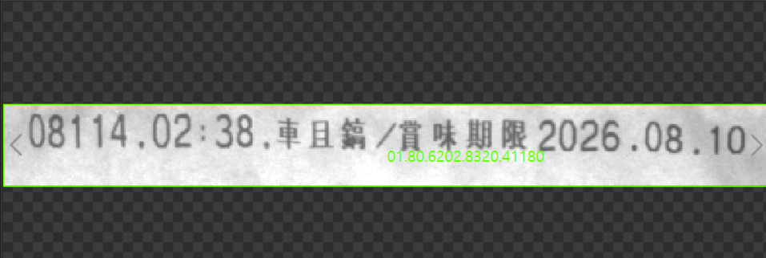
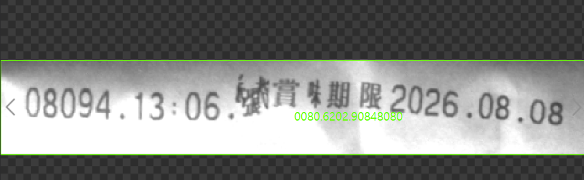
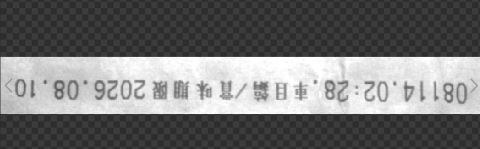
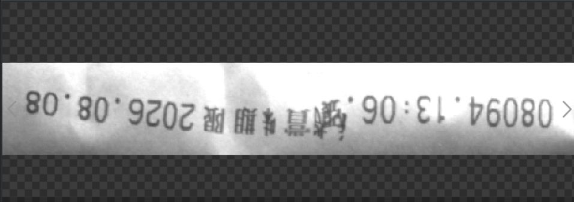
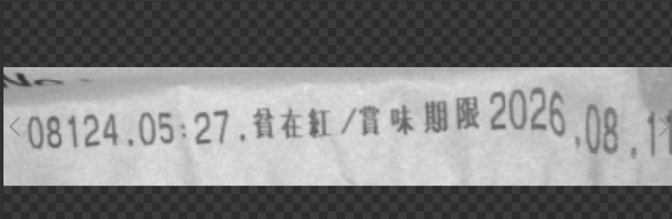
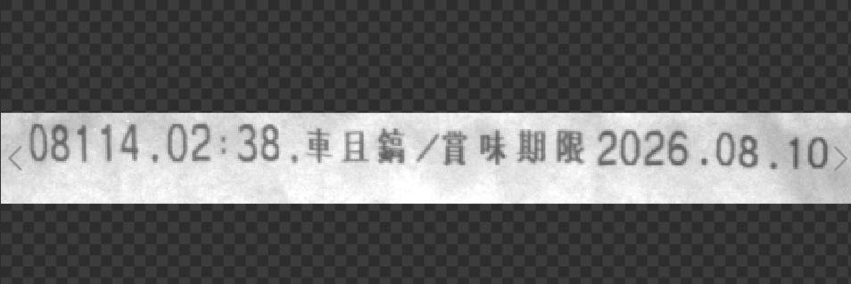
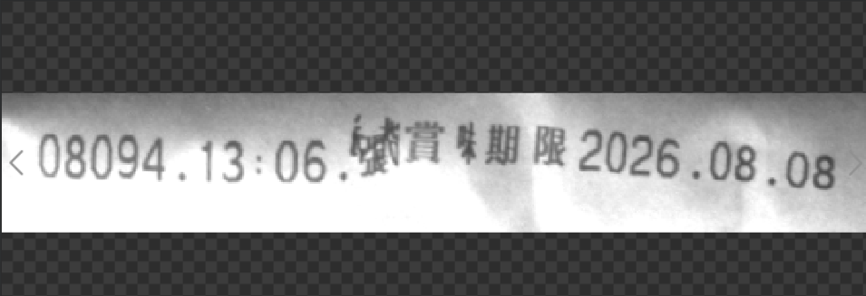
08 · Inspection
2단계 - AI OCR로 문자 인식
문자 위치를 찾은 후에는
해당 영역에 ROI를 자동으로 생성하여
AI OCR이 생산일자를 인식하도록 구성하였습니다.
이번 프로젝트는 일반 OCR로는 매우 어려운 조건이었습니다.
포대 꾸김
글자 왜곡
잉크 번짐
문자 형태 변화
등 다양한 변수가 존재했지만,
AI OCR을 활용하여 생산에 사용되는 문자들을 충분히 학습시킨 결과
안정적인 문자 인식이 가능하도록 시스템을 구축하였습니다.
ai로 위치 확인한 곳에서 ROI 박스 확인
ROI 박스 적정확대
180도 회전하여 정위치로 정렬
문자인식
위의 4가지 과정을 통해서 문자를 인식할 수 있었습니다.
09 · Inspection
AI OCR도 학습이 중요합니다
AI OCR은 매우 뛰어난 기술이지만,
학습되지 않은 문자나 숫자는 정확도가 낮아질 수 있습니다.
이번 프로젝트에서는
생산에 사용되는
숫자
문자
날짜 형식
등을 충분히 학습시켜
실제 생산라인에서도 높은 인식률을 확보할 수 있었습니다.
10 · Inspection
합리적인 비용으로 구축
이번 프로젝트는 단순히 기술적으로 어려운 프로젝트를 해결한 것뿐만 아니라
기존 제안 업체 대비 약 절반 수준의 비용으로 구축하였습니다.
ASPEC은 무조건 고가의 장비를 제안하기보다
고객의 생산 환경에 가장 적합한 솔루션을 설계하여
성능과 비용을 함께 만족하는 시스템을 구축하는 것을 중요하게 생각합니다.
11 · Inspection
이번 프로젝트를 통해 고객이 얻은 효과
이번 시스템 구축으로 고객사는 다음과 같은 효과를 얻을 수 있었습니다.
✔ 포대 생산일자 자동 OCR 검사
✔ 작업자의 육안 검사 최소화
✔ 다른 업체가 해결하지 못한 프로젝트 성공
✔ AI 기반 문자 위치 자동 검출
✔ AI OCR 적용
✔ 꾸겨진 포대에서도 안정적인 문자 인식
✔ 휴먼에러 감소
✔ 생산성 향상
✔ 합리적인 구축 비용
✔ 품질 관리 신뢰성 향상
12 · Inspection
ASPEC의 생각
OCR 프로젝트는 단순히 문자를 읽는 기술이 아닙니다.
제품의 재질,
문자의 인쇄 방식,
제품 변형,
위치 편차,
광학 조건까지 모두 고려해야만 실제 생산라인에서 사용할 수 있는 시스템이 됩니다.
이번 프로젝트는
기존 방식으로 해결하지 못했던 문제를
AI 기반 문자 위치 검출과 AI OCR을 조합하여 성공적으로 구축한 대표적인 사례였습니다.
ASPEC은 자동차, 제약·바이오, 식품, 화학, 전자부품 등 다양한 산업 분야에서 AI OCR과 머신비전 시스템을 구축하며 축적한 경험을 바탕으로 고객의 생산 환경에 가장 적합한 자동화 솔루션을 제안하고 있습니다.
Operation
현장 적용과 운영 조건
구김·문자 왜곡·잉크 번짐 때문에 기준 패턴을 잡기 어려운 포대에서 문자 영역을 먼저 찾고 AI OCR을 수행한 사례입니다. 검출 위치를 기준으로 OCR ROI를 설정했습니다.
- 포대 구김과 문자 왜곡
- 잉크 번짐
- 기준 패턴 부재
Result
적용 효과
- 포대 생산일자 자동 OCR 검사
- 작업자의 육안 검사 최소화
- 다른 업체가 해결하지 못한 프로젝트 성공
- AI 기반 문자 위치 자동 검출
- AI OCR 적용
- 꾸겨진 포대에서도 안정적인 문자 인식
- 휴먼에러 감소
- 생산성 향상
- 합리적인 구축 비용
- 품질 관리 신뢰성 향상
Engineering
ASPEC의 머신비전 시스템 설계 방식
검사 대상의 재질과 형상, 설치 공간과 생산 조건에 맞춰 장비·광학·소프트웨어와 설비 연동을 함께 검토합니다.
- 포대 구김과 문자 왜곡
- 잉크 번짐
- 기준 패턴 부재
08 · Related Cases
관련 구축사례
비슷한 공정의 자동화를 검토하고 계신가요?
검사 대상과 불량 샘플, 설치 공간, 택타임을 알려주시면 적용 구성을 검토해 드립니다.